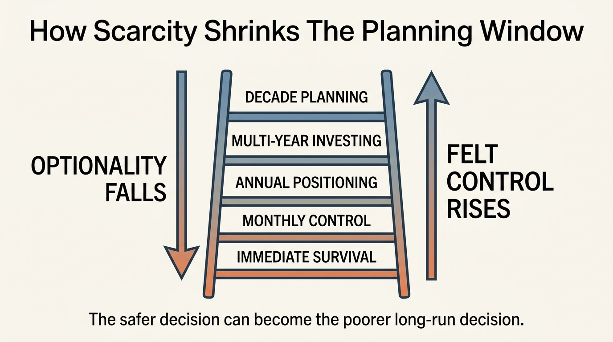

The Scarcity Mindset Loop
Many households think scarcity ends when income crosses a threshold. In practice, scarcity often persists as a decision style long after immediate deprivation has eased. The paycheck rose, the checking balance improved, and the household may even look comfortable on paper. Yet the underlying operating mode remains defensive, compressed, and short-horizon. That mismatch can quietly become a wealth drag.
Scarcity mindset is not merely anxiety about money. It is a repeated pattern of narrowing the time horizon, over-weighting immediate control, and treating flexibility as something to be protected through defensive cash posture even when that same posture reduces long-run resilience. The household feels prudent because it is avoiding visible danger. It may actually be sacrificing optionality, return quality, and strategic mobility.
Core thesis: the scarcity mindset loop keeps households in a self-reinforcing cycle. Past instability produces horizon compression. Horizon compression encourages underinvestment, delayed skill spending, weak diversification, and excessive preference for immediate certainty. Those decisions slow the growth of real cushion. The slow cushion growth then keeps the household feeling scarce even when income has improved.

Why Scarcity Survives Income Growth
Income and mindset do not update on the same clock. A household that spent years one bad month away from trouble often carries those stress patterns forward. This is rational at first. A family that has experienced layoffs, medical shocks, expensive moves, or unstable freelance income should be slow to trust apparent stability. The problem begins when yesterday’s emergency frame becomes the permanent rule set for today’s larger balance sheet.
That is the loop. The household keeps selecting what feels safest in the moment: too much idle cash, too little investment risk, delayed relocation even when geography is punitive, postponed retraining, postponed help, postponed long-horizon planning. Each decision is understandable alone. In aggregate they can lock the household into a structurally slower wealth path.
This is the mirror image of The Comparison Trap in the Digital Age. Comparison error pushes households to overspend in order to match a false upper tail. Scarcity error pushes households to underbuild because they remain mentally trapped inside a past downside state. The outward behaviors differ. The shared mechanism is distorted calibration.
The Loop Usually Starts With Horizon Compression
Scarcity thinking shortens the planning horizon. When immediate control dominates, decisions get filtered through one question: “What prevents pain in the next few weeks or months?” That frame is excellent for surviving instability. It is weaker for building wealth. Real wealth depends on choices whose payoff arrives later: skill investment, portfolio compounding, tax optimization, geographic moves, business development, and durable relationship with calculated risk.
Once time horizon compresses, almost every strategic move becomes harder to approve. The course looks expensive. The move looks dangerous. The concentrated debt payoff feels better than the diversified investing plan. Cash that should become productive capital stays in low-yield defensive posture because visible liquidity feels emotionally safer than probabilistic long-run gain.
This does not mean the answer is reckless risk-taking. It means households need to distinguish true emergency reserves from a generalized refusal to move capital into better long-run uses.
Why The Loop Can Produce Hidden Fragility
Scarcity mindset often looks conservative. In practice it can create a different kind of fragility. Underinvested households may avoid drawdowns but also fail to grow cushion fast enough. Workers who never spend on capability upgrades may preserve short-term cash while becoming more exposed to labor-market shocks. Families who refuse to change cities, refinance old assumptions, or redesign work may feel stable while quietly giving up the optionality that would have made them safer.
That is why the loop belongs in wealth analysis rather than self-help language. The issue is not emotional tone. The issue is capital allocation. A household can be psychologically cautious and financially exposed at the same time.
| Scarcity response | Why it feels safe | How it can weaken wealth |
|---|---|---|
| Excess idle cash | Cash is visible, immediate, and controllable | Inflation drag and slower compounding reduce future cushion |
| Delayed skill spending | Avoids near-term cash outflow | Can lower earning power and bargaining leverage later |
| Avoidance of portfolio risk | Reduces fear of mark-to-market loss | May trap the household below its required growth rate |
| Overfocus on monthly survival | Keeps immediate obligations manageable | Blocks multi-year planning around housing, taxes, and mobility |
Scarcity And Hoarding Are Not The Same As Liquidity Strength
Liquidity matters. A household that cannot survive a disruption has a real problem. But there is a difference between robust liquidity design and indiscriminate cash hoarding. Robust liquidity means the emergency layer is intentionally sized and paired with a broader allocation plan. Hoarding means cash keeps accumulating because deployment feels unsafe, even when the intended purpose of the money is unclear.
This distinction matters because the asset-rich, cash-poor problem and the scarcity loop can coexist. One household is nominally wealthy but illiquid. Another household is liquid but strategically underbuilt because too much of the balance sheet remains trapped in defensive posture. In both cases the core issue is not simple net worth. It is whether the balance sheet supports real choice.

Where Scarcity Becomes Self-Fulfilling
The loop becomes self-fulfilling when defensive choices slow the very wealth growth that would have resolved the original fear. A worker avoids retraining because cash feels scarce, then suffers stagnating income because capability did not rise. A family avoids taking diversified market exposure because volatility feels intolerable, then finds that the portfolio never compounds enough to create real surplus. An owner refuses short-term spending on systems, staffing, or tax design, then remains permanently overloaded and cash-fragile.
At that stage scarcity is no longer just a response to financial conditions. It is helping reproduce them.
This is also where the topic overlaps with loss aversion. Both patterns overweight immediate pain relative to long-run gain. Loss aversion usually appears inside portfolio and selling decisions. Scarcity mindset is broader. It can shape career, education, housing, health spending, business design, and even social relationships around money.
What A Better Wealth Response Looks Like
The fix is not to declare scarcity irrational and swing toward optimism. The fix is to separate layers of money clearly enough that defensive instinct no longer controls all of them at once. Emergency cash should defend true short-run risk. Investment capital should be evaluated against long-run obligations. Skill spending should be judged by expected income durability, not by the discomfort of present outflow alone. Geographic and work decisions should be priced for optionality, not only for immediate familiarity.
In practice, better households build explicit buckets. One bucket is genuine liquidity defense. One is long-run compounding. One is strategic upgrading: education, systems, tools, mobility, legal and tax structure. Once those buckets exist, every dollar no longer has to solve every fear at the same time.
- Define a reserve target tied to real disruption risk rather than vague anxiety.
- Separate emergency cash from medium-term deployment capital.
- Review whether “safe” choices are preserving flexibility or merely preserving familiarity.
- Ask whether delayed spending is avoiding waste or delaying a high-return capability upgrade.
- Measure progress against balance-sheet resilience, not only against the emotional comfort of a checking balance.
Why This Matters More In A Long-Horizon Economy
Longer working lives, unstable credential half-lives, and higher capital-market dependence make scarcity mindset more expensive than it used to be. In a world where households need larger buffers, more re-skilling, and more deliberate capital deployment, permanent defensive posture can leave them underprepared for exactly the future they fear. Stability now depends less on one careful month and more on decades of compounding, adaptability, and optionality.
The real danger, then, is not simply feeling poor. It is remaining behaviorally poor after conditions have improved enough to support a different operating mode.
Bottom Line
The scarcity mindset loop is a wealth problem because it changes how capital gets used. It narrows time horizon, elevates immediate control above long-run design, and can keep households underinvested in the very assets that would create real safety. The right response is not denial of risk. It is more precise architecture: enough liquidity to withstand shocks, enough productive deployment to build future cushion, and enough analytical distance to tell the difference.